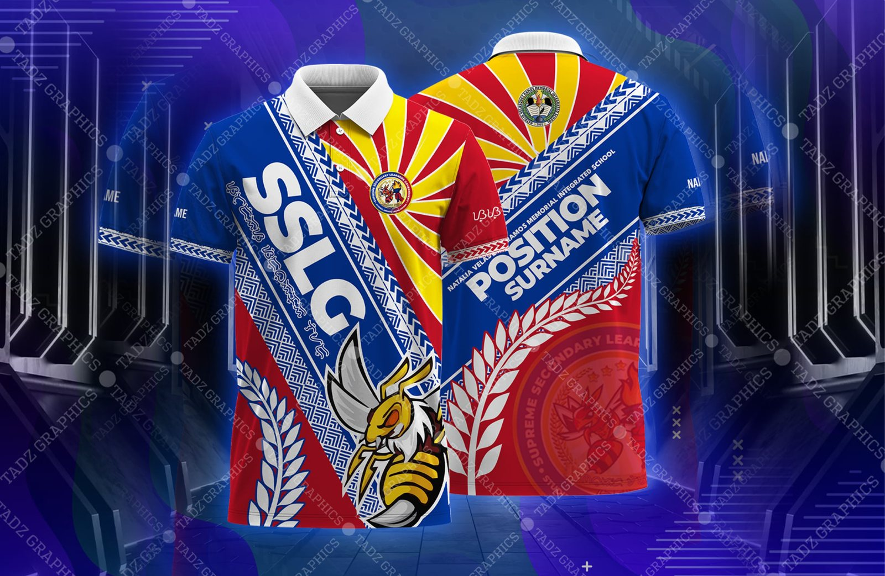
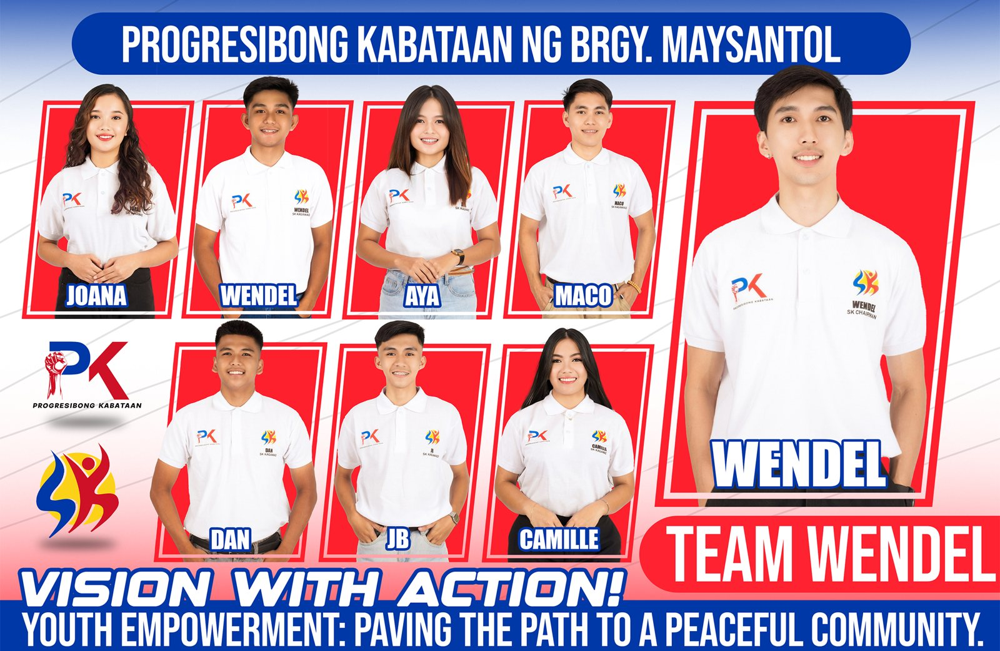

Jersey designFull sublimation

SSLG polo, blue and red
A full sublimation polo layout with bold diagonal bands and a mascot front and back.
View in Work ↗Creative Digital Professional
I'm a creative digital professional with 4 years of freelance experience in graphic design. I also build Web & Mobile Application and handle data entry and digital tasks.
I enjoy combining creativity and technology to turn ideas into meaningful visuals, functional applications, and practical solutions.
Always something new to learn, something new to try, and something worth creating.

A full sublimation polo layout with bold diagonal bands and a mascot front and back.
View in Work ↗A barangay seal built around a farmer and carabao scene, the Philippine sun and a ring of people icons.
View in Work ↗
A campaign tarpaulin with a team photo grid, a large lead portrait and a bold slogan band.
View in Work ↗Self-Employed
Self-Employed · Remote
Office of Civil Defense Region 1